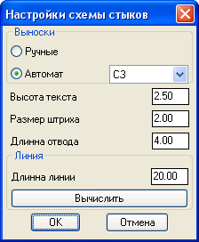
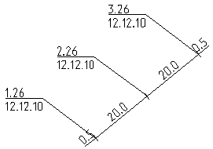

Команда: draw_scheme_butts
Команда: draw_scheme_buttsЧертит линию трубы для схемы стыков с расстояниями и выносками.
Облегчает рисование схемы стыков.
Команда: draw_scheme_butts
 Укажи начальную точку [Настройки/Продолжить]:
Укажи начальную точку [Настройки/Продолжить]:
 указывает точку от куда начнется рисоваться схема (начнется с отвода). Так же можно посмотреть-изменить Настройки
указывает точку от куда начнется рисоваться схема (начнется с отвода). Так же можно посмотреть-изменить Настройки
Если выбран пункт настройки видим:
Выноски могут быть ручные когда положение каждой выноски указывает пользователь или автоматические когда указывается только направление в котором выноски будут выноситься.
Высота текста - это значение высоты в единицах чертежа (почти всегда в метрах)
Размер штриха - длинна штриха обозначающего шов
Длинна отвода - длинна линии обозначающей отвод (точнее расстояние от шва до угла поворота трубы)
Длинна линии - длинна линии, в единицах чертежа, обозначающей трубу между швами, если необходимо вписать определенное количество швов в некорорую общую длинну чтобв не заниматься арифметикой есть кнопка Вычислить она позволяет по двум точкам и количеству швов определить каким должно быть значение длинны линии
Или выбрать пункт Продолжить
указывает точку от куда начнется рисоваться схема, но в этом случае схема будет отрисована начиная с линии трубы.
Укажи направление:
указывает направление, в котором будет рисоваться труба, точкой, или с клавиатуры
Введи длинну отвода <0>:(если перед этим выбран пункт "Продолжить" этого запроса не последует)
вводит с клавиатуры цифру которая будкт подписана над обозначением отвода
Введи номер шва.клеймо сварщика:
вводит с клавиатуры номер шва и через точку клеймо сварщика (например: 115.72)
Введи дату пр.работ:
вводит с клавиатуры дату производства работ в удобном формате
Введи длинну трубы<0>(0=конец линии):
вводит с клавиатуры цифру которая будкт подписана над обозначением трубы.
Смещенные строки будут выполняться циклично пока в запросе длинны линии пользовательне укажет 0.
Введи длинну отвода <0>:
вводит с клавиатуры цифру которая будет подписана над обозначением отвода
Укажи направление [Настройки]:
указывает направление, в котором будет рисоваться труба, точкой, или с клавиатуры, также возможно изменение настроек.
Пример результата работы программы
